Wednesday, March 31, 2004
EAT !
I walked through the empty clinic waiting room at the end of the day. The overhead TV, as usual, was on, and blathering away. My eye, good doggy that it is, trained by 52 years of living in TV world, obediently swiveled up to meet the images. An ad. Extreme close up of a face. A man spooning something into his mouth. A look of orgasmic pleasure. Then a merry child with a milk mustache.
"Faugh," I grumbled, wrenching myself out of the tube's sticky grasp.
I was hungry. I'd brought too little lunch. And ate it too early. I'd been guiltily crunching non-vegan wintergreen lifesavers from the clinic stash all afternoon. I don't even like wintergreen. And my dentist would kill me. (Or, less professionally, rub her hands in glee at the prospect of more profitable cavities, broken teeth and crowns.)
And the images of people, close up, filling their happy little pie holes with food made me want to eat. They got me, the marketers. One of their trillion little daily victories. Of course, vegan that I am (or am trying to be), I'd not likely rush out and buy milk or yogurt or icecream or whatever they were shilling. But nonetheless, I wanted to run out and buy something. To fill my unhappy little pie hole.
We went to a bad movie a few weeks ago. Johnny Depp doing a tortured writer thing in Stephen King's, Secret Window. They had him mooning about in a bad bathrobe eating Doritos. The movie was so silly, the product placement dominated plot and character. I sat there the whole time wanting to eat Doritos. Every lovingly reproduced "crunch" reinforced my desire. I could taste Doritos. I could feel them in my mouth, crunching between my teeth. I could imagine the powdery, greasy residue they leave on the fingertips.
I don't even eat them anymore. They're probably not vegan. And when I did eat them, I'd eat way too many of them (how DOES one stop eating such abominations ?) and die for two days afterwards of heartburn, dyspepsia and systemic garlic fume.
But Johnny Depp made me want to eat Doritos.
And the clinic TV made me want to eat. Anything.
These are poisonous, manipulative, insinuating images, and we are awash in them. It's enough to bring out one's inner hungerkunstler.
Tuesday, March 30, 2004
The Mitthead Panders On. And On. And ON.
So the Massachusetts legislature met for yet another session, and narrowly passed a separate-and-unequal, civil-rights-denying, separation-of-church-and-state abrogating travesty of an amendment with which they propose to desecrate the State Constitution.
The Mitthead wasted no time -- the guy needs a choke collar to keep his urge to pander in reign -- getting on the TV and vowing to petition the Supreme Court for a stay in the May 17th deadline for allowing same sex marriages. This was minutes after his Attorney General -- Tom Reilley, a same-sex marriage foe, and the only person empowered to bring such a petition -- had told Romney that he would NOT do so, as it would be illegal; the Court had clearly spoken. Sorry, Gov. no can do.
Cut to the Mitthead, waxing moronic and Republicanic about "the people." How they must be allowed to "speak."
How they must, for reasons of bigotry, hatred and narrowly denominational religious doctrine, be allowed to deny a minority full participation in the rights and obligations of society.
I take comfort in my conviction that history, from the vantage point of future social enlightenment, will judge him harshly: bigoted, cowardly, pandering, backward-looking, self-serving. Our state has been blessed with numerous excellent civil servants -- Paul Tsongas, Mike Dukakis, Ted Kennedy, John Kerry, Barney Frank -- who have been consummately professional, dedicated and even visionary in their service.
This is in great contrast to Mr Romney who brings to office the narrow concerns of the venture capitalist CEO that he was: money, autocratic power, personal gain and personal ambition.
Of course, the likelihood is that this amendment, this ridiculous and cumbersome construction will collapse under the weight of its own grotesquerie long before it ever reaches the ballot. By that time, thousands of same sex marriages will have occurred, the world will NOT have ended. It will even be a brighter and happier world ! There will be more love, more freedom, more connection, more tolerance.
And the Mitthead and his Phelpsian best buds will be left to preach to a dark and increasingly empty house.
The Mitthead wasted no time -- the guy needs a choke collar to keep his urge to pander in reign -- getting on the TV and vowing to petition the Supreme Court for a stay in the May 17th deadline for allowing same sex marriages. This was minutes after his Attorney General -- Tom Reilley, a same-sex marriage foe, and the only person empowered to bring such a petition -- had told Romney that he would NOT do so, as it would be illegal; the Court had clearly spoken. Sorry, Gov. no can do.
Cut to the Mitthead, waxing moronic and Republicanic about "the people." How they must be allowed to "speak."
How they must, for reasons of bigotry, hatred and narrowly denominational religious doctrine, be allowed to deny a minority full participation in the rights and obligations of society.
I take comfort in my conviction that history, from the vantage point of future social enlightenment, will judge him harshly: bigoted, cowardly, pandering, backward-looking, self-serving. Our state has been blessed with numerous excellent civil servants -- Paul Tsongas, Mike Dukakis, Ted Kennedy, John Kerry, Barney Frank -- who have been consummately professional, dedicated and even visionary in their service.
This is in great contrast to Mr Romney who brings to office the narrow concerns of the venture capitalist CEO that he was: money, autocratic power, personal gain and personal ambition.
Of course, the likelihood is that this amendment, this ridiculous and cumbersome construction will collapse under the weight of its own grotesquerie long before it ever reaches the ballot. By that time, thousands of same sex marriages will have occurred, the world will NOT have ended. It will even be a brighter and happier world ! There will be more love, more freedom, more connection, more tolerance.
And the Mitthead and his Phelpsian best buds will be left to preach to a dark and increasingly empty house.
Sunday, March 28, 2004
Pathside Parousia
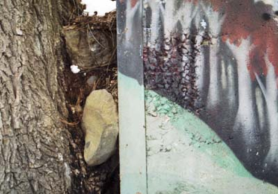
This photo is of the interface between a tree and a wall's mural of trees. In the gap: a stone, some snow. The wall's concrete has abraded to the texture of bark. The dense stand of painted trees -- smooth trunks pale ghostly gray, leaves shocking red -- march up a steep, light green hill. The real tree, wedged into the hillside, is a field of fissured brown bark.
Further down the path the mural's heavily over-scrawled with graffitti.
Tree, mural of tree, photo of tree and mural of tree, graffitti. The semiotics get increasingly recursive. What was that Dogen said about a painted rice cake ?
As I walked the river path yesterday I saw a man about 30 yards ahead of me repeatedly leaning and reaching into the pathside shrubs. What was he doing ? Was he picking these ?
Or perhaps my fantasy botanist had finally materialized -- the grave and accomplished Mr Uva or Senesec of Weeds Of The Northeast -- and had come to identify my beautiful nameless grass
and offer me further deep and esoteric botanical teachings.
So I quickened my pace, and soon caught up with him.
He was a middle aged, bespectacled fellow, neatly dressed, with a close-cropped, dark and professorial beard. He seemed a bit flustered to find me standing at his side. "I'm removing the orange tags," he explained, brandishing a handful of small plastic orange ribbons he'd removed from bushes. Sure enough -- the whole length he'd come was free of them.
"So you're the tagger -- or the detagger, as it were," I replied, trying to appear friendly and non-threatening. "I'd always wondered about those orange ties."
"Well," he said, "they're to mark what shouldn't be cut, but look, I think some kids have just tied them randomly to plants -- there are ties even on annuals tnat are clearly dead. I think it looks much better without them."
Annuals ! He was using terminology ! I grew more and more excited. This was it. He'd come, my weed messiah. My taxonomic redeemer. This was the apotheosis of my half year riverbank pilgrimage. The guru had arrived.
"Are you a botanist ?" I blurted.
"No !" He recoiled as if from a mild slap. Or from a possible nutjob.
"Oh," I said, crushed, then explained I'd been trying to identify a grass species for months, and had hoped he'd know.
"I see," he mumbled, then was silent. He looked embarrassed. I'd apparantly encountered the only person on the planet shyer than myself.
"Well, then," I said, trying to sound chipper, "carry on !"
He turned back to his methodical harvest, and I ducked down a small trail to the riverbank. The recent snow was melted, and I searched for the bank's little marvel, the ultimate conversation of artifice and nature --
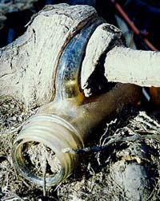
There it was.
I eavesdropped awhile on its teachings, and headed home.
This photo is of the interface between a tree and a wall's mural of trees. In the gap: a stone, some snow. The wall's concrete has abraded to the texture of bark. The dense stand of painted trees -- smooth trunks pale ghostly gray, leaves shocking red -- march up a steep, light green hill. The real tree, wedged into the hillside, is a field of fissured brown bark.
Further down the path the mural's heavily over-scrawled with graffitti.
Tree, mural of tree, photo of tree and mural of tree, graffitti. The semiotics get increasingly recursive. What was that Dogen said about a painted rice cake ?
As I walked the river path yesterday I saw a man about 30 yards ahead of me repeatedly leaning and reaching into the pathside shrubs. What was he doing ? Was he picking these ?
Or perhaps my fantasy botanist had finally materialized -- the grave and accomplished Mr Uva or Senesec of Weeds Of The Northeast -- and had come to identify my beautiful nameless grass
and offer me further deep and esoteric botanical teachings.
So I quickened my pace, and soon caught up with him.
He was a middle aged, bespectacled fellow, neatly dressed, with a close-cropped, dark and professorial beard. He seemed a bit flustered to find me standing at his side. "I'm removing the orange tags," he explained, brandishing a handful of small plastic orange ribbons he'd removed from bushes. Sure enough -- the whole length he'd come was free of them.
"So you're the tagger -- or the detagger, as it were," I replied, trying to appear friendly and non-threatening. "I'd always wondered about those orange ties."
"Well," he said, "they're to mark what shouldn't be cut, but look, I think some kids have just tied them randomly to plants -- there are ties even on annuals tnat are clearly dead. I think it looks much better without them."
Annuals ! He was using terminology ! I grew more and more excited. This was it. He'd come, my weed messiah. My taxonomic redeemer. This was the apotheosis of my half year riverbank pilgrimage. The guru had arrived.
"Are you a botanist ?" I blurted.
"No !" He recoiled as if from a mild slap. Or from a possible nutjob.
"Oh," I said, crushed, then explained I'd been trying to identify a grass species for months, and had hoped he'd know.
"I see," he mumbled, then was silent. He looked embarrassed. I'd apparantly encountered the only person on the planet shyer than myself.
"Well, then," I said, trying to sound chipper, "carry on !"
He turned back to his methodical harvest, and I ducked down a small trail to the riverbank. The recent snow was melted, and I searched for the bank's little marvel, the ultimate conversation of artifice and nature --
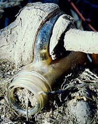
There it was.
I eavesdropped awhile on its teachings, and headed home.
Saturday, March 27, 2004
The Fortuitous Juxtaposition Of Incipient Hypochondria And Petty Larceny In A Clinic Corridor

It was early. The clinic had just opened for business and nurse M. and I were in rooms with the first two patients of the day. We emerged in tandem to see a young man in a wool cap rushing down the hall, away from our offices, toward the waiting room. Our clinic is not a through traffic area. And he was not a patient.
"Who's that ?" M. asked. "Do you think he took anything ?"
I checked my backpack, plopped in its usual spot on the floor by my desk. No wallet.
It had been a somewhat, well, neurotic morning. Barely awake and undercaffeinated, I'd peered in the bathroom mirror and concluded that my right eyelid was drooping. A little. Maybe.
My medical brain whirred into action it's not seen since I was cramming for my board recert a year ago. Ptosis ? Horner's syndrome ! Third nerve palsy ! Aneurysm ! Pancoast tumor ! Brain tumor ! Stroke ! Carotid dissection ! Multiple sclerosis ! Giant cell arteritis ! Could the vertebral arteries be occluding ? And the pupil: too large or too small ? Was I sweating a wee tad less on one side of my face ? Omigod -- could this have anything to do with the tinnitus in my right ear ? Or that fugitive and subtle tingling on the sole of my right foot that I'd been noticing off and on ? Was that my tongue tingling now ? That eyelid was even feeling heavy ! And the headaches I'd awakened with three days running, maybe they weren't caffeine related after all -- it's the aneurysm ABOUT TO BLOW ! Did those MRAs I had after the accident last September include the Circle of Willis ??
Fueled by timor mortis, I came up with a comprehensive, consultant-level list of terrible afflictions that would probably do me before I even made it to work.
Then I did what I ask patients to do when they think they have a subtly droopy eyelid: I checked a photo to see whether it's always been droopy and maybe I just noticed it this morning.
I went for the obvious: my driver's license picture.
This entailed an unusual morning excursion of my wallet out of my backpack and onto my desktop. I extracted my license and scrutinized my (extraordinarilty hideous) DMV mugshot. Even through my OED magnifying glass, I could tell nothing about my eyelids, but I was able to ask, once again, the obvious question, "Who is that broad-faced dopey-looking gray haired peasant in the owlish glasses ?"
Against all odds, I arrived at work neurologically intact, and locked myself in the little staff bathroom to continue my self-examination: I stared and ogled and squinted and gaped and glared and finally decided it was all an inconsequential asymmetry, one eye just a little more deeply set in its socket. I shuddered a little, thinking of eye sockets, then put it all out of mind. Concluded that having had adult rickets and a C2 fracture in the space of half a year had made me a bit of a hypochondriac. Vowed to resist it.
Then wool cap man whizzed down the corridor and I noticed my wallet was missing.
Was it home on my desk next to the OED magnifying glass ?
Fast forward to the end of the day: it was not.
And my credit card company recorded an attempt to procure $283 from a bank one town over from the hospital, a half hour after Mr Wool Cap had fled the building.
A charming, spiky little nexus of events, eh ?
I suppose that if I'd not fished my wallet from the ugly depths of the backpack that morning and replaced it right on the easy-to-snatch top of things, maybe Mr Cap would have been delayed in his criminal act and I might have caught him. "Unhand that, miscreant !" I could have shouted, and surely nurse M. and I could have wrestled him to the ground and summoned our little hospital's crackerjack security team.
Heroines.
Or maybe he would have shot us.
Or, discovered, started to cry (he looked quite young.)
But the karmic algorithm evolved as it evolved. Me, inconvenienced. The thief not much richer, and most likely living a life heavy on affliction.
Maybe I'll ask the DMV to take another mugshot for my new license.
One that shows the eyelids this time. Just in case.
Sunday, March 21, 2004
Dwelling
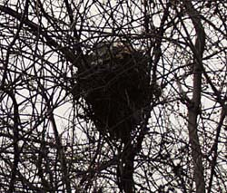
Etymologically, "dwell" comes from to tarry, to linger. There is an implicit sense of transience. Stay awhile, then move on. This house, this body, this earth. As night comes on, fitful rain hits the window. The sound is sharp; it could be ice. I rejoice in the warmth and light of my dwelling, even as I experience its provisionality.
I am a stranger with thee, and a sojourner, as all my fathers were.
It's from another beautiful song. This time, not in my dear father, Raul Stanati's voice, but in Alfred Deller's, the late, magnificent countertenor. It's from an anthem by Orlando Gibbons, based on the 39th psalm, a psalm of lament and of supplication. The psalmist, whose life is like "a puff of wind" and who "walks about like a shadow," prays "turn your gaze from me, that I may be glad again/before I go my way and am no more." It is God's punishment he feels, God's "rebukes for sin." The "gaze" of God is piercing and afflictive: disheartening, debilitating, the ultimate panopticon.
Can we read it as a projected gaze ? A reification of our own afflictive self-consciousness, the big eye/I that is the ego ?
In the text of Gibbons' anthem, the gaze is displaced: "O spare me a little, that I may recover my strength/ before I go hence and be no more seen." The psalmist asks for generic mercy and mourns his own passing, his disappearance from the gaze of others.
Two other fragments of text come to mind. The first, from Waiting for Godot:
"They give birth astride a grave, the light gleams an instant, then it's night once more."
This existentially bleak image contains no dwelling except a glint of light and its implicit eye. Later the image recurs, elaborated:
"Astride of a grave, and a difficult birth. Down in the hole, lingeringly, the grave-diggger puts on the forceps. We have time to grow old. The air is full of our cries."
Well, that's a little better. Midair, on that blankest of pages, we compose our cries.
I walked the river path again yesterday, alert for signs of spring. My eye is tiring of tangled detritus, of thorn and fading leaf, of browns and grays punctuated by the shock of lingering red berries or of a branch that's greenish or maroon. Of everything, underfoot, becoming black slime.
A woman walking a dog stopped as I photgraphed a backlit bank of pale yellow, nearly translucent leaves last week. "Something interesting ?" she asked. "Everything's interesting," I replied, in a yellow ecstasy.
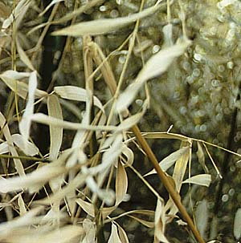
Today I'm not so sure. Winter weariness. It will pass.
At least the recent snowfall has covered the riverbank litter, the plastic springwater bottles flung aside by virtuous, self-hydrating joggers, the potato chip bags dropped by the more phlegmatic strollers, the tires, the shopping carts, the mattresses, sprung umbrellas, booze bottles, cigarette butts, condom wrappers -- and even, in a small iced-over cove, a rubber ball stamped: PROZAC.
Indeed.
Is there any sign of quickening ? Do the branches seem a bit more knobbed, the tight buds slightly fuller ?
There's some undeniable action:
And, even more spectacularly,
and even this
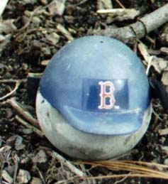
We should not ever doubt that all is flux and flow, and that we have awakened into its dazzling midst. We feel affliction, pleasure; we fill the air with our cries -- for mercy, of delight. We address it all as "God" -- that most capacious of words -- out of the depth of our most inarticulate longing: de profundis clamavi.
The third text is the famous ending of the Diamond Sutra.
So you should view all of the fleeting worlds:
A star at dawn, a bubble in the stream,
A flash of lightning in a summer cloud,
A flickering lamp, a phantom and a dream.
It contains the psalmist's "puff of wind" and "shadow," and the playwright's momentary "gleam" of light. It does not privilege the cries, the supplications, the theistic quid pro quos, the sense of absurdity: ontologically, they are simply fleeting worlds among a myriad fleeting worlds. Waystations, on a long railroad.
Tiny dwellings along the way.
Friday, March 19, 2004
Google -- Is There Any Illusion It Cannot Demolish ?
I don't remember when I first read about Japan's "capsule hotels" -- it seems to me it was a very long time ago, probably in childhood, and probably in one of those three iconic magazines to which everyone subscribed back then, Life, Look or the Saturday Evening Post. I was deeply impressed, and have carried around an image in my head of gleaming sci-fi establishments, very 2001 Space Odyssey, frequented by quiet, serious, monk-like types in white jump suits, solitary travelers, probably artists, all exuding existential gravitas. I've always been fascinated by the idea of small spaces -- tents, closets, railroad berths, huts, holes, hermitages -- and the little Japanese hotel pods fit right in.
I realized, recently, I could google them.
First off, I learned that they are mostly frequented by drunken businessmen who have missed the last train home. That women, by and large, are not permitted to stay in them. Nor, oddly enough, are tattooed men, since tattoos are a marker for mob affiliation.
The Cosmo Plaza Akabane has an amusingly babelfished website that shows that capsule hotels more resemble kennels than Kubrickian spacecraft.
Another dream, alas, has been demolished. But, in its place, the Cosmo Akabane bathroom offers this koan-like reassurance:
For 24 hours, It can take a bath in the time of your hope.
Your fatigue will be healed by it.
Thursday, March 18, 2004
Waystation
Could the elusive, melancholy song with the line I sit alone in a waystation be Randall Thompson's "The Passenger" ?
It's from 1957, one of five love songs for baritone and piano, so the voice is right. The title's ringing the faintest of bells, a half-heard windchime in a barely palpable breeze. There's a recording of it, for which I've sent.
I've been thinking about the past. Thinking about how much of my life -- how many memories -- I've thrown into poems. I could arrange them chronologically and make an autobiography out of them. It's all very retro and uncool, all very pre-pomo and ewww, confessional, I know.
But I'm a poit, not a poet, and have no obligation to any theory of poetics. These verbal constructions of mine, these poem-like artifacts, are primitive, autodidactous; my shadow life, a heavily photoshopped slide show of my trip through this vallombrosa -- inherently fascinating to me, dull as, well, toast to others. Yawning is allowed, encouraged even, contagious.
Here's Raul.
Duodenum
Daddy had a duodenal
ulcer back in ‘61
when they were as de rigeur
as black hornrims and whifflecuts.
Dr. Tom prescribed a diet
(day old toast in heavy cream
with Aludrox and Miltown chasers)
and a hobby. So our tract house
gushed with oils -- tirades of flowers,
churning seascapes, moody clowns,
a few Pollocky drop-cloth abstracts
that Mommy wouldn’t let him hang.
Then came his mosaic phase.
Our surfaces grew Byzantine.
He crazy-tiled the coffee table,
TV, bureaus, mantelpiece,
the windowsills and countertops
and had plans for the patio
but realized that his burning foregut
was cool, man, cool -- Oh, Daddy-O --
it purred as softly as gray flannel
for fried eggs, bacon, coffee, T-bones,
dry martinis, Lucky Strikes.
So Daddy sheathed his pallette knife,
rejoined us at the common sirloin
back from his Gethsemane.
Scales of grout flaked off his fingers
and his eyes. He looked around.
His moon-faced daughter, silent wife
sat in shrines of glinting fracture
anointed with burnt umber, scarlet.
He felt sheepish. Rats and arms raced
round and round God’s lofty deathbed,
Communists walked Patton Street
in broad daylight ! His gut was quiet.
What could he do but pray for migraine ?
Memories, dreams and poems are like rooms. Arrangements of images and, in the case of poems, words and sounds, in timespace. Memories and dreams are private rooms. A poem is a public room, a room that appears different to everyone who enters it. And yet we can cohabit it, companionably.
Now here's my dear mother, the exquisitely anagrammed Camelia Vorring. The remembered object that sparked this poem is a skirt -- long, polished cotton, with black, pink and gray stripes. It was my mother's, and I played "dress-up" in it as a child. Plus some honeymoon photos. If you look closely at the poem, you will see my face before I was born. There, in the lower right hand corner.
The Origins Of Skirt
In the last hours of my bloodless néant,
outside Québec City’s battlements,
where an ordinary nuptial June
frothed in the postwar luxe et calme,
a woman in a full, lustrous skirt,
(coral, jet and silver-gray, its waist
so tiny it would nip a thick child jalouse)
scaled a hill, a barrow mound of stones,
each ovate, palm-sized, dull and river-smoothed.
A camera tracked her climb.
Six photos document the doomed ascent.
In stiff-soled lune-de-miel sandals
she skids up the cobbled, man-made dome
smiling at an implicit, adoring eye.
The lovely skirt balloons, unwraps
a startled O O of kneecaps, a slight
indrawn gasp of thigh. And then
she twists away as if strafed, thrashes, flails,
swats. He snaps and snaps. Her round eyes fill
with bombazine panic, pain, hate, néant.
The Kodak blanc-et-noir omits the hot
pink of skirt and welt, and how,
across the droning gulf of afternoon,
forty six chromosomes, a perfect 50’s His and Hers,
waved their arms and crossed their legs.
On the sixth photo, the one I call
Mother Seated Upon Cairn, Weeping ,
my father footnoted a fat hymenopteran,
in broad cartoonish stripes, piqûre en garde,
the bee-de-miel, leering, bumbling in.
Needless to say, a memory, that icon of pastness, is a mutable event that transpires wholly in the present. Memories fade, sharpen, change, disappear, arise de novo, get implanted -- it's a wonder human personalities cohere at all.
Commenting on my Love Letter post below, Dale calls writing a form of "clasping." What a great word. Clasping -- holding, gathering together, connecting, bundling, embracing.
I love how it subtly differs from clinging. It's looser, more provisional, spacious, temporary. The rope around a bundle of sticks rots; the sticks fall away.
I do think my writing has always been an attempt to fix the past. To fix it as in correct, revise, reshape. And to fix it as in freeze or preserve. There's both clasping and clinging involved. And dissemination: the wish to imprint simulacra of myself into the minds of others, an act of self-amplification and connection.
It's all very naive and primitive, fit for archiving in a dusty annex of The Museum Of Bad Art (MOBA)*.
*I've been there. It's all it promises, and more.
Tuesday, March 16, 2004
A Belated Love Letter
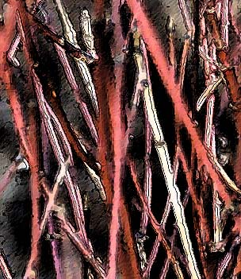
I like the smell of moldy cellars. It reminds me of publishing.
When I was 12 or so a pair of slightly younger girls, sisters, lived across the street. One day we decided to make a book. It was, of course, hand made, with a print run of one. My contribution was a poem, of which I remember two lines:
The butterfly story was sadder by far.
It was caught by a boy and brought home in a jar.
Already I had developed a worldview that defined cruelty as a masculine enterprise. My dear father, Raul Stanati, was a splendid parent. But when I was quite young, maybe six or seven, I went through a period of terrible insomnia. I think I was afraid of bad dreams -- bad dreams of dark, empty houses where light switches did not work and faceless ghosts electrified and paralyzed me. I'd insist that my mother remain awake while I tried to sleep; from my door I could see the narrow beam of light that proved she was sitting vigil, under the floor lamp, probably smoking a Kent or eating an orange.
One night, seized by doubt, I tiptoed past my doorway and looked around the corner. No mother. A terrible ruse !
"Stop crying or I'll give you something to cry about !" bellowed my irate and sleepless father, standing at my bedside in his snow-white briefs, his hair sticking up on end.
It was all very pre-oedipal. I wanted my Mommy. Daddy begged to differ. Boys were mean .
We created our book in the cellar of the sisters' old house, working at a card table by the back wall window. The light from the yard came in through streaky glass ; the rest of the cellar was in darkness. A hulking, cistern-like boiler crouched in the shadows.
I like to remember those three girls, inexplicably drawn to create that most potent and mysterious of icons, a book. I think back even farther, to second grade. I'd decided I was going to make a book. Of flowers. One to a page: some rayed and daisy like, others cupped like tulips -- the ur-flowers of my limited botanical imagination. I shuttled back and forth from desk to construction paper shelf, tossing off the flowers as fast as I could.
What are you doing, asked the fearsome Miss Janson, a short and bull-dog like woman, practically crewcut, who had known my parents at teacher's college.
I am making a book ! I replied.
She scrutinized my pile of drawings of redundant flowers.
You are wasting paper, she declared.
Well, I was, in a way. And I knew it. I scribbled the flowers faster and faster, gleeful as the manuscript increased in heft, unmindful of craft, of readership, greedily prolific.
There's a lesson in there somewhere.
I once harbored the notion of attempting to publish a slim volume of verse. I entered a few of those "first book" competitions, and hurled a few mss's over unsuspecting and hostile transoms. I even got accidentally networked via a poetry buddy to a small press whose mission -- multicultural free verse political poetry -- was utterly different from my own poitic project. It was no surprise when my ms. returned several years later with some harsh editorial comments on the clumsiness of my iambics and the tawdry "personal" nature of my subject matter.
Wasting paper again, I see, sneers Miss Janson from beyond the grave.
She did have supernatural powers, you know.
The proof came one day just before class began. Before our late 1950's public school morning ritual of the pledge of alliegance, a patriotic song and two prayers: The Lord's Prayer, and, of all things, the 23rd psalm. What did a seven year old know about Vallombrosa ? Miss Janson was nowhere to be seen and we were growing restive. Suddenly her voice boomed forth from the intercom: INGRID PUT YOUR DESKTOP DOWN ! The heavy oak desktop crashed down. We stared, dumbstruck, at poor Ingrid.
How did Miss Janson know ?
I've never solved that mystery.
It was a memorable year. It was an old, brick school, very fin de siecle, with windows so tall one opened them with a window stick I had a crush on a blond Polish girl, Karen Plonowski, who either liked or had horses. (Probably liked. This was Lawrence, Massachusetts, after all, a grim post-industrial mill town, not Weston or Dover.) We made sputnicks out of styrofoam balls and toothpicks, and christmas ornaments -- birds -- out of milkweed pods. We had A- bomb drills -- duck and cover, the real deal -- and were issued little cards that read ... if you see a flash of light in the sky, take cover ... . Sunlight glinting off an airplane's wing terrified me as I walked home that day. I clipped articles about fallout shelters from the Lawrence Eagle Tribune, and we stocked my father's basement music closet with cans of food and jugs of water; small comfort to those of us who were in the know. That plywood door would not keep out the deadly gamma rays.
We lived in the valley of the shadow of death. Was I scribbling flowers for posterity ? Wait -- what posterity ?
One day in class we were going to make "moon rocks." These were based on a popular fifties science toy -- a kit for brewing a chemical soup in which multicolored, Dr Seussian stalagmites would grow. Very JFK, very space race. But that day we apparantly lacked some component of the mix. Undaunted, Miss Jansen bellowed out of the tall, third story window at some passing boys, tossed down some money, and commanded them to buy it for her at the corner store.
I remember them. They seemed impossibly old. Why weren't they in school ? They swaggered about. Am I remembering them through a Fonzie filter ? The sleeves of their undershirts were rolled up over bulging biceps, and one of them swigged orange tonic (Massachusettsian for soda pop) from a large glass bottle. They exuded danger. Yet they were in Miss Janson's thrall.
She was powerful. Her rule and her windowstick, they comforted us. But can anything really counteract the presence of our enemies -- furious fathers, dangerous boys, men with A-bombs -- when the chair beneath the lamp is so very, very empty ?
Monday, March 15, 2004
Oh My Papas
I fianlly remembered to ask my father, the dear and ultra anagrammatic Raul Stanati, about the song. Do you remember, I asked, a song you used to sing, something about a train and a waystation ? Maybe by Randall Thompson ?
No. He did not.
I sang a few bars. Badly, tentatively. I do not sing. Cannot, will not, must not sing. Period. But I sang. Mumble-sang, actually. My non-singing has something to do with having singing parents, some warped oedipal and/or electrical thing. I reference the old black and white photos of my parents onstage singing Gilbert & Sullivan at teachers' college. They are making beautiful music together. (Stroking her beard.) Primal scene ? Where is the Alienist when I need him ?
Now I must digress further. The Alienist -- and I called him that in my journals decades before he became (in)famous for his studies of alien abductions -- sent me to an EST-like workshop called, if I remember correctly, "Relationships" in Boston in 1984. The group leader was an arrogant, sadistic little shit who reminded me of Groucho Marx. One participant was given a nightmare task. She had to do what she feared most. She had to sing in front of the group. She stood there for long, long minutes, paralyzed, trembling, staring at the floor, unable to open her mouth. I felt every moment of her pain as if it were my own.
Groucho's working the interrogation rooms at Gitmo these days, I feel it in my bones.
So I've made progress. I actually sang for my father. He remembered the song, but not the composer. And he still loves me, despite the singing. I love calling him "Raul Stanati." It is a dashing, swarthy, romantic name for my dashing, swarthy romantic father. Who could indeed have been played by late, wonderful actor Raul Julia.
You will understand why "Alan Turista" would not have done at all.
Has there been equivalent progress in resolving the psychoanalytic transference ?
I would like to be able to say Him ? Oh, he went right off the deep end. A sad case. Or, Recovered memories ? Of alien abductions ? Isn't a psychiatrist supposed to make people less crazy ?
But if I said that he might not love me anymore.
So, to preserve that imagined love and approbation, I find myself entertaining the notion that people are brought up beams of light into spaceships. By little gray aliens. Who probe them and impregnate them. On some alternate, spiritual plane of reality. To warn us all of impending ecological armageddon.
Oh, dear.
I loved and love The Alienist. He was a wonderful doctor. Kind, respectful, attentive, faithful, insightful. Being in psychoanalysis with him was a transformative event in my life. But, gosh.
Well, maybe it's all metaphor, interpretable in the same way a dream is. Just a latter day just-as-implausible alternative to Freud's poles and holes and castration anxiety. Just a different schema, language.
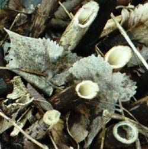
Signs are arbitrary, right ? And the author, that disreputable Mr Kurtz behind the oz screen, he's dead, isn't he ? And the self is a fiction, easily deconstructable ? Tout comprendre c'est tout pardonner ? The rain in spain ? A painted rice cake ? Daddy, headshrink, guru, pope !
Who wrote that song ?
I'll never know. It's a lovely tune. Simple, plaintive, slightly melancholy.
I sit alone in a waystation.
Did we dream it ?
No. He did not.
I sang a few bars. Badly, tentatively. I do not sing. Cannot, will not, must not sing. Period. But I sang. Mumble-sang, actually. My non-singing has something to do with having singing parents, some warped oedipal and/or electrical thing. I reference the old black and white photos of my parents onstage singing Gilbert & Sullivan at teachers' college. They are making beautiful music together. (Stroking her beard.) Primal scene ? Where is the Alienist when I need him ?
Now I must digress further. The Alienist -- and I called him that in my journals decades before he became (in)famous for his studies of alien abductions -- sent me to an EST-like workshop called, if I remember correctly, "Relationships" in Boston in 1984. The group leader was an arrogant, sadistic little shit who reminded me of Groucho Marx. One participant was given a nightmare task. She had to do what she feared most. She had to sing in front of the group. She stood there for long, long minutes, paralyzed, trembling, staring at the floor, unable to open her mouth. I felt every moment of her pain as if it were my own.
Groucho's working the interrogation rooms at Gitmo these days, I feel it in my bones.
So I've made progress. I actually sang for my father. He remembered the song, but not the composer. And he still loves me, despite the singing. I love calling him "Raul Stanati." It is a dashing, swarthy, romantic name for my dashing, swarthy romantic father. Who could indeed have been played by late, wonderful actor Raul Julia.
You will understand why "Alan Turista" would not have done at all.
Has there been equivalent progress in resolving the psychoanalytic transference ?
I would like to be able to say Him ? Oh, he went right off the deep end. A sad case. Or, Recovered memories ? Of alien abductions ? Isn't a psychiatrist supposed to make people less crazy ?
But if I said that he might not love me anymore.
So, to preserve that imagined love and approbation, I find myself entertaining the notion that people are brought up beams of light into spaceships. By little gray aliens. Who probe them and impregnate them. On some alternate, spiritual plane of reality. To warn us all of impending ecological armageddon.
Oh, dear.
I loved and love The Alienist. He was a wonderful doctor. Kind, respectful, attentive, faithful, insightful. Being in psychoanalysis with him was a transformative event in my life. But, gosh.
Well, maybe it's all metaphor, interpretable in the same way a dream is. Just a latter day just-as-implausible alternative to Freud's poles and holes and castration anxiety. Just a different schema, language.
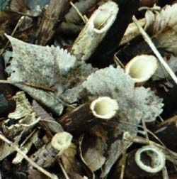
Signs are arbitrary, right ? And the author, that disreputable Mr Kurtz behind the oz screen, he's dead, isn't he ? And the self is a fiction, easily deconstructable ? Tout comprendre c'est tout pardonner ? The rain in spain ? A painted rice cake ? Daddy, headshrink, guru, pope !
Who wrote that song ?
I'll never know. It's a lovely tune. Simple, plaintive, slightly melancholy.
I sit alone in a waystation.
Did we dream it ?
Sunday, March 14, 2004
From the Bullpit
The rhetoric sharpens. The archbishop declines to meet with gay Catholics, then appeals for charity in a Globe op ed piece. Charity for whom, one wonders, suspecting he means for Catholics in their avowed and doctrinal objection to homosexuality. A group of black Protestant clergy sniff: Do not call your struggle one for "civil rights." We suffered more than you did. Gays must not wed. The Bible says so.
Outside the state house the placards grow more stridently Phelpsian, the appeals grow more blatantly evangelical and fundamentalist. Let there be no further doubt that this anti-gay marriage constitutional effort is an attempt to write sectarian Christianity into civil law. To make me subject to the stipulations of doctrine that I reject.
The latest rhetorical gambit is to invoke Sweden. To correllate gay marriages with a plethora of supposed social ills. The old post hoc propter hoc fallacy. One might just as well correllate herring consumption with divorce rate. The intellectual dishonesty is staggering. Or, more charitably, the stupidity is staggering.
Inside the state house the attempts to compromise with social justice produce a convoluted mess of legal text and political strategy -- an amendment that says: marriage must be between a man and a woman. Gays shall have a "civil union" that confers the same rights and responsibilities.
Separate and probably not equal.
Governor Romney, AKA the Mitthead, looking more like J.R. Bob Dobbs by the minute,

vows to appeal to the Supreme Court to postpone the May 17th deadline for allowing gay marriage, and, eye on the White House, hints at other imperial tactics up his sleeve.
We can only hope that, eventually, we will be snapping our fingers to some latter day Mingus' Fables of Faubus-like tune -- Myths of Mitt perhaps ? -- appalled at the bitter, destructive prejudices of a backward age.
Saturday, March 13, 2004
The Little Match Girl
The image is bathetic: the little motherless girl, a rag-clad match-seller, crouched in a snowy midnight alleyway on New Year's Eve. Her shoes -- her dead mother's over-large and dilapidated slippers -- fell off as she ran from a speeding carriage, and and a taunting boy has stolen them. She is wretchedly cold and barefoot. If she goes home her father will beat her: she has not sold her quota of matches. In the bright windows along the street are festive tableaux. The smell of holiday food is in the air.
Desperate, she strikes her matches for warmth. At the heart of each flame, she hallucinates scenes from which she is excluded: a warm, bright room, a roaring fire in the hearth; a table set with wonderful food; a magnificent Christmas tree strung with beautiful lights. Scenes of hearth and home, of family, safety, conviviality and celebration. She is the ultimate outsider, the excluded one, the invisible one.
Finally, in extremis, she strikes the last match and, within the flame, sees her grandmother, who descends from heaven, gathers her up, and bears her aloft.
The story ends at daybreak, New Year's morning: her frozen body in the alley . Passersby look on, saddened. In their holiday distraction, they'd overlooked her the night before. Would they have opened their door to her if she'd knocked ?
As a child, I'd always wished that Hans Christian Anderson had left out that last scene, had not sown that poisonous nugget of doubt into the bright dream of beatific reunion. I preferred magic, sleight of hand, the unconditionally happy ending to the near impossible task of faith.
Some of us are born outsiders. It is a biological given, neither virtue nor vice, a constitutional hyper-sensitivity, a defect of filtering, a overdevelopment of wariness and caution, an underdeveloped sense of pleasure with interaction. We marvel at the gregarious, the convivial, at their easy pleasures and unconflicted appetites, at their bulging date-books. We watch them departing for their week-ends, their gatherings, their get-togethers. They are connected even in absentia: cell phone, email. We peer into their well lit windows at their parties, and watch them enjoy themselves . For us the self is not an occasion of enjoyment. It is a barrier, a skin of displeasure, a mirror-hall of dysphoric hyper-awareness. Are we lonely ? Are we hungry ? Are we envious ? Maybe a little bit.
In spiritual circles we are found in hermitages, pursuing the most apophatic of practices. The idea of a "prayer circle" gives us hives. We can be found perched on the edge of a back pew, ready to bolt before the parishioner to our left can tender the Hug of Christ, or the hearty minister can come at us with his beatific handshake and invitation to coffee hour. Better yet, we sit off hours in the empty, shadowy church. Psalmistically speaking, we inhabit the threshold of the house of God. Quick-eyed Love passes us the platter of cold-cuts; we decline, and flee.
Desperate, she strikes her matches for warmth. At the heart of each flame, she hallucinates scenes from which she is excluded: a warm, bright room, a roaring fire in the hearth; a table set with wonderful food; a magnificent Christmas tree strung with beautiful lights. Scenes of hearth and home, of family, safety, conviviality and celebration. She is the ultimate outsider, the excluded one, the invisible one.
Finally, in extremis, she strikes the last match and, within the flame, sees her grandmother, who descends from heaven, gathers her up, and bears her aloft.
The story ends at daybreak, New Year's morning: her frozen body in the alley . Passersby look on, saddened. In their holiday distraction, they'd overlooked her the night before. Would they have opened their door to her if she'd knocked ?
As a child, I'd always wished that Hans Christian Anderson had left out that last scene, had not sown that poisonous nugget of doubt into the bright dream of beatific reunion. I preferred magic, sleight of hand, the unconditionally happy ending to the near impossible task of faith.
Some of us are born outsiders. It is a biological given, neither virtue nor vice, a constitutional hyper-sensitivity, a defect of filtering, a overdevelopment of wariness and caution, an underdeveloped sense of pleasure with interaction. We marvel at the gregarious, the convivial, at their easy pleasures and unconflicted appetites, at their bulging date-books. We watch them departing for their week-ends, their gatherings, their get-togethers. They are connected even in absentia: cell phone, email. We peer into their well lit windows at their parties, and watch them enjoy themselves . For us the self is not an occasion of enjoyment. It is a barrier, a skin of displeasure, a mirror-hall of dysphoric hyper-awareness. Are we lonely ? Are we hungry ? Are we envious ? Maybe a little bit.
In spiritual circles we are found in hermitages, pursuing the most apophatic of practices. The idea of a "prayer circle" gives us hives. We can be found perched on the edge of a back pew, ready to bolt before the parishioner to our left can tender the Hug of Christ, or the hearty minister can come at us with his beatific handshake and invitation to coffee hour. Better yet, we sit off hours in the empty, shadowy church. Psalmistically speaking, we inhabit the threshold of the house of God. Quick-eyed Love passes us the platter of cold-cuts; we decline, and flee.
Thursday, March 11, 2004
Provisions
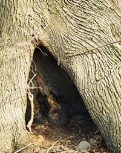
Three Provisions For A Hermitage
i.
I did not neglect the matter of provisions.
I studied, to this end, extreme accounts
of polar expeditions, long ocean voyages,
journeys to the world’s most improvident corners,
then combed through narratives of desert stylites,
and the gathas of mountain recluses
for hints of panem quotidianum --
grasses, locusts, air, handsful of old rice;
and, finally, I scoured the manuals
of quartermasters, tenzos, cellarers, wardens,
those ordained to feed men under Rule,
searching the texts for what would best suffice
my simple, temperate zone hermitage.
ii.
The cellarer, a wise man of settled habits,
advised I amply stock my hermitage
with flour, rice, peas, dried fruits, root vegetables,
and, for savor, oil, coffee, salt, enough
for a long sojourn. “Only fools,” he said,
“ignore incarnation’s self-evidence,
so sink a well, and draw up all you need
for drinking, cooking, bathing. Cultivate
a kitchen garden plot, nine or so bean rows,
and weed it with diligence. All bounty
flows, graceful and mysterious, from God,
into your keeping. Do not break His trust.
Let everything sustain you. Give thanks and praise.”
The tenzo, accomplished and of a way-seeking mind,
advised, “For water, situate yourself
by a clear, quick stream, one equally good
for music and drinking, where the moon floats,
and where snowmelt instills a taste of dust
to tell your tongue that it is also dust.
Like hollow stones set out to catch rainfall,
your begging bowl will often brim with wind,
so learn to forage -- roots, nuts, berries, leaves.
The earth is generous. Ten thousand fruits
arise from emptiness and then return,
as thoughts do, and as you will, too, someday.
All is provisional. Wells sour. Springs fail.
So seek your anchorage within the Source.”
iii.
The afternoon can barely lift its head.
Storms muster in the west, and, to the east
the restive ocean gathers at the gates
of Harborview and Pigeon Cove. The year
falls past fall again, the same old cadence.
I can’t fatten or slumber, so I sing
along, my voice as brittle and apt to break
as a cheap glass ball mis-hung on a fractured branch --
I am the wren that quivers in the mouth
of the stranger’s broken eaves. I am the snow
that slides across its blank, unmoving eye.
Stars flicker between branches. Christmas lights
blink on and off, too fast, monotonous
emergencies of red and green. Herod
mugs with schoolchildren. White bulbs detonate,
blinding -- God, I can’t do this anymore.
I’m sick of stories, yours, mine, them all.
I have desired to go where words all fail.
Will Providence attend me, even there ?
2002-2003
Sunday, March 07, 2004
Rain And The Rhinovirus
The slate gray, billowing clouds finally moved west, taking the sudden gusty rain with them. I had been sitting in my car waiting for the shower to pass, watching the Charles River fall over its little spillway, impatient to get to my walk. There's nothing like a good old fashioned cold to bring out one's peevishness. One's head -- the brain pan, for goodness sakes -- becomes host to a miraculously self-renewing spring, bubbling up from nostrils and eyes and throat. The unexpected downpour seemed a watery taunt. Childish, hankering, I taunted back: Rain, rain go away/ little Paula wants to play.
There was a part of me that was at peace. I was warm and dry. The rain noodled pleasantly on the car roof. The clouds were extravagant, interesting. But nonetheless, there they were, all three kilesas at once, doing their little vaudeville routine: the wanting, the pushing away, the clamoring, impatient, snot-addled, illusory self.
Finally, the rain stopped.
So I went out, avec camera again, into the late winter woods. The landscape's pallette has been narrowing week by week to dun gray, brown, black. Subtle purple and green branches, by contrast, appeared neon-bright. Green-gray lichens seemed positively gaudy. The drabness honed attention. I noticed that form, underfoot, was giving way to a humid compost of emptiness: mud and decaying leaves. I took a picture of the delicate ribs of a tattered, rotting leaf on a bed of sludge. My own ribs someday.
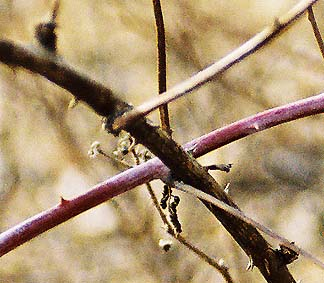
Almost out of film, I picked my way through the brush and trash of the municipal, post-industrial riverbank, drawn by some clustered clumps of pale stalks rising from the water just offshore. They were mudstained and wet up half their length, then ghostly beige. I got closer and peered into the water from which they rose: the eye of a dead fish stared back.
As I walked back to my car, I remembered that it's Lent: the season of relinquishment, of fasting. The bleak stretch between Fat Tuesday and the Easter Ham. The final dregs of winter, just before the earliest, most tentative hints of spring. Which is, after all, the prize. The resurrection and the life. The binge that follows the purge. Brought to you by your heavenly host, JC. Who descended and rose and ascended and who will be back for a rapturous return engagement. Get your Godside tickets now. Christian "salvation" with its complicated timetable and mechanics exasperates me. Is there a Christian equivalent of When you meet the Buddha on the road, slay him ?
The green mountains, replies Dogen, are walking.
Saturday, March 06, 2004
Foggy Daughter
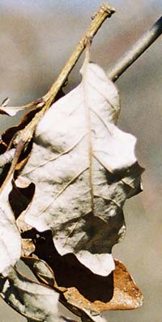
In Lithuanian mythology, the oak is the sacred tree of Perkunas, the god of thunder and lightning. Perkunas is classically masculine, Thor-like. He oversees retribution -- smiting evil-doers -- and fructifying -- striking the dormant earth in spring to wake her, then inseminating her with dew. His representative animals are the bull and the he-goat.
I don't much like Perkunas. He seems like a vile combination of George Bush and Arnold Schwarzenegger. He's a gender cartoon, all terrible swift sword and sexual prerogative. He seems a made-to-order mascot for the religious right, way more so than Jesus. There's nothing turn-the-other-cheek about Perkunas. He's a cinematic, eye for an eye kind of deity with a robust, pre-modern sex life.
But I'm just two generations away from Lithuania, the Old Country. My nationalistic uncle taught me early on that Lithuanian is one of the most ancient languages, quite close to Sanskrit. He taught me that all words have etymologies. He tried to teach me to distinguish red oaks from black oaks from white oaks by leaf shape, but it never stuck. Nonetheless, I've always loved oaks. For the brown and leathery leaves that remain on the branches in the winter and make a fine rattling hissing sound in the wind. For acorns, with their little Jean-Paul Sartre berets. I came out of childhood viewing Lithuania as the pre-lapsarian paradise of my forefathers.
Then I read some modern history. Read about how eagerly Lithuanians collaborated with the Einsatzgruppen genocide; read about the pogroms, the liquidated ghettos, the killing pits in the Ponary forest.
Perkunas' symbol ? The swastika.
Nebelsdottirs (6.6.95)
Old Herr Professor Sigmacht Nebelfrei
once spawned and made himself three pretty daughters --
Großein, Großzwei, Großdrei --
who traveled by themselves to Argleterror,
Bigone, Bigtwo, Bigthree.
They fled across the sparkling Heimat waters.
One was as fair as blissful Saxony
and lusty as a Rhineland tinker's dam.
First she took the fine name Great and then she
called her brooding older sister Grand.
Grand was tall as a hollow Lindenbaum
and swaggered like a hopeless courting ram;
the last was Gross who pined for hearth and home,
through thick and thick and thick and thick and thick.
A sward, a swale, a whistling piny grove
a cottage made of twenty walking sticks,
the sisters were as rich as Deutschland queens,
with crowns of tooth and roots like leather whips
all tangled beneath the cold reluctant green
of shallow grass. But their woods were full of owls,
and black feathers spun and tumbled on the sheen
of their brooks and anthems; their sky blue porcelain bowls
held cheeses ripening to sour and fetid soap.
There were no cellars deep enough, no holes
whose darkness could in them instill the hope
that they could bear to look upon the closest
to them, and not think of dying by the rope.
Yes, Argleterror was a bitter hostess
to dreadful Father Grimm's expatriata
the lovely daughters gross, grosser and grossest.
Tuesday, March 02, 2004
In Which I Have A Moment Of High Proustian Nausea Then Indulge A Long-Held Desire
I got up early to vote, to arrive at the polling place -- an elementary school -- before the kiddos arrived. To get in my Lenten 20 mintes of relinquishment of discursive thought before that. And before that, the Globe and coffee. A tall order, but I did it.
It's a gray morning, mildish, but with a bite in the air. The school is an old brick building that reminds me of my first school, the John Breen Elementary School in Lawrence, Massachusetts. Presided over by Mr Parthum and his paddle, a varnished, skate-board sized instrument of corporeal punishment. He may never have actually wielded the thing against child flesh. It may have simply been an instrument of deterrance. It was the late fifties, after all -- the era of Cold War nuclear brinksmanship, and the waning days of the spare-the-rod-spoil-the-child philosophy. But one did get "called to the office" and that's where the paddle lived. Who knew what went on behind those tall closed doors. We could only imagine.
Tool World
Two puddles, orange and white,
are two last breakfasts lost.
The big hand springs erect.
The big bell bolts us down.
The Paddle lives in the Office.
The right hand fits over the heart.
The head hangs over white knuckles.
Say trespasses, not debts.
Piddle snakes down a pants leg.
Sixty wide eyes watch a pool
gather under Old Glory.
Thirty hands flap overhead.
She peddles the ABCs
from a bag concealed in her drawer.
There’s a tin hole near the ceiling.
It might be a mouth or an eye.
The world (she says) is a puzzle
of interlocking parts.
Heads snap into crotches,
and arms twist behind backs.
She gave us each a pencil
and one yellow square with blue bars.
A fingerbone screeched across jet black ice.
First lesson: O O O
(1999)
The smell of the Bright School this morning gave me the Proustian willies -- boredom, anxiety, loneliness, suffocation -- all came flooding up. I couldn't get out of there fast enough.
The voting ladies seemed singularly untogether today. Maybe they hadn't hit their stride yet. The main one, whom I recognized from other elections, was as effiecient as usual in extracting my address and name from her big book. There was a second one sitting next to her who seemed terribly confused and distressed.
This excess of voting ladies had something to do with declaring a party affiliation in the primary. Eventually I was handed a ballot in a manila folder and ushered to a booth. Gone, as of a year ago, are those cool lever-operated voting machines. I loved pushing the little levers on the wall to vote, then pulling the big lever to register the votes and open the curtain. That grand, punctuating gesture was a satisfying and dramatic flourish. There's not even a curtain now. Just a felt tipped pen and little circles to fill in. How SAT.
At the exit, there was another voting lady, then a man in charge of the ballot machine. It was refusing to accept the ballots. The man looked addled and distressed. The machine resembled a shredder.
I did not make any wisecracks about Florida.
Only in America: for twenty eight bucks one can buy an ugly tee shirt that states "voting is for old people." No matter how one deconstructs this message, no matter how many layers of irony, cynicism or counter-cynicism one imputes to it, the fact remains that that ultimate cynicism is in the marketing. Profit, not message.
So I indulged myself today.
Pissed at Mr Kerry for his willingness to allow gender-based bigotry to be enshrined in the Massachusetts State Constitution, I voted for Dennis Kucinich.
It's a gray morning, mildish, but with a bite in the air. The school is an old brick building that reminds me of my first school, the John Breen Elementary School in Lawrence, Massachusetts. Presided over by Mr Parthum and his paddle, a varnished, skate-board sized instrument of corporeal punishment. He may never have actually wielded the thing against child flesh. It may have simply been an instrument of deterrance. It was the late fifties, after all -- the era of Cold War nuclear brinksmanship, and the waning days of the spare-the-rod-spoil-the-child philosophy. But one did get "called to the office" and that's where the paddle lived. Who knew what went on behind those tall closed doors. We could only imagine.
Tool World
Two puddles, orange and white,
are two last breakfasts lost.
The big hand springs erect.
The big bell bolts us down.
The Paddle lives in the Office.
The right hand fits over the heart.
The head hangs over white knuckles.
Say trespasses, not debts.
Piddle snakes down a pants leg.
Sixty wide eyes watch a pool
gather under Old Glory.
Thirty hands flap overhead.
She peddles the ABCs
from a bag concealed in her drawer.
There’s a tin hole near the ceiling.
It might be a mouth or an eye.
The world (she says) is a puzzle
of interlocking parts.
Heads snap into crotches,
and arms twist behind backs.
She gave us each a pencil
and one yellow square with blue bars.
A fingerbone screeched across jet black ice.
First lesson: O O O
(1999)
The smell of the Bright School this morning gave me the Proustian willies -- boredom, anxiety, loneliness, suffocation -- all came flooding up. I couldn't get out of there fast enough.
The voting ladies seemed singularly untogether today. Maybe they hadn't hit their stride yet. The main one, whom I recognized from other elections, was as effiecient as usual in extracting my address and name from her big book. There was a second one sitting next to her who seemed terribly confused and distressed.
This excess of voting ladies had something to do with declaring a party affiliation in the primary. Eventually I was handed a ballot in a manila folder and ushered to a booth. Gone, as of a year ago, are those cool lever-operated voting machines. I loved pushing the little levers on the wall to vote, then pulling the big lever to register the votes and open the curtain. That grand, punctuating gesture was a satisfying and dramatic flourish. There's not even a curtain now. Just a felt tipped pen and little circles to fill in. How SAT.
At the exit, there was another voting lady, then a man in charge of the ballot machine. It was refusing to accept the ballots. The man looked addled and distressed. The machine resembled a shredder.
I did not make any wisecracks about Florida.
Only in America: for twenty eight bucks one can buy an ugly tee shirt that states "voting is for old people." No matter how one deconstructs this message, no matter how many layers of irony, cynicism or counter-cynicism one imputes to it, the fact remains that that ultimate cynicism is in the marketing. Profit, not message.
So I indulged myself today.
Pissed at Mr Kerry for his willingness to allow gender-based bigotry to be enshrined in the Massachusetts State Constitution, I voted for Dennis Kucinich.
Monday, March 01, 2004
Silence Of The Iambs
Trap Music
Blank verse is a trap.
-- Peter Davison
There was a trap, he said,
which had all the trappings of a trap --
cheese, spring, jaw.
So I chewed off my own two feet, he said.
Left three for the trapshoot.
When he shot himself in the foot, he said
Left two left feet.
There was a trap set, he said. Castanet,
snare. Up he flew, flimflam, paradi-
saical,
then down to sleep, ear to the floorboards,
exhausted, footloose, and pining for
the telltale heart’s pingPONG pingPONG pingPONG.
8.11.98
Subscribe to:
Posts (Atom)